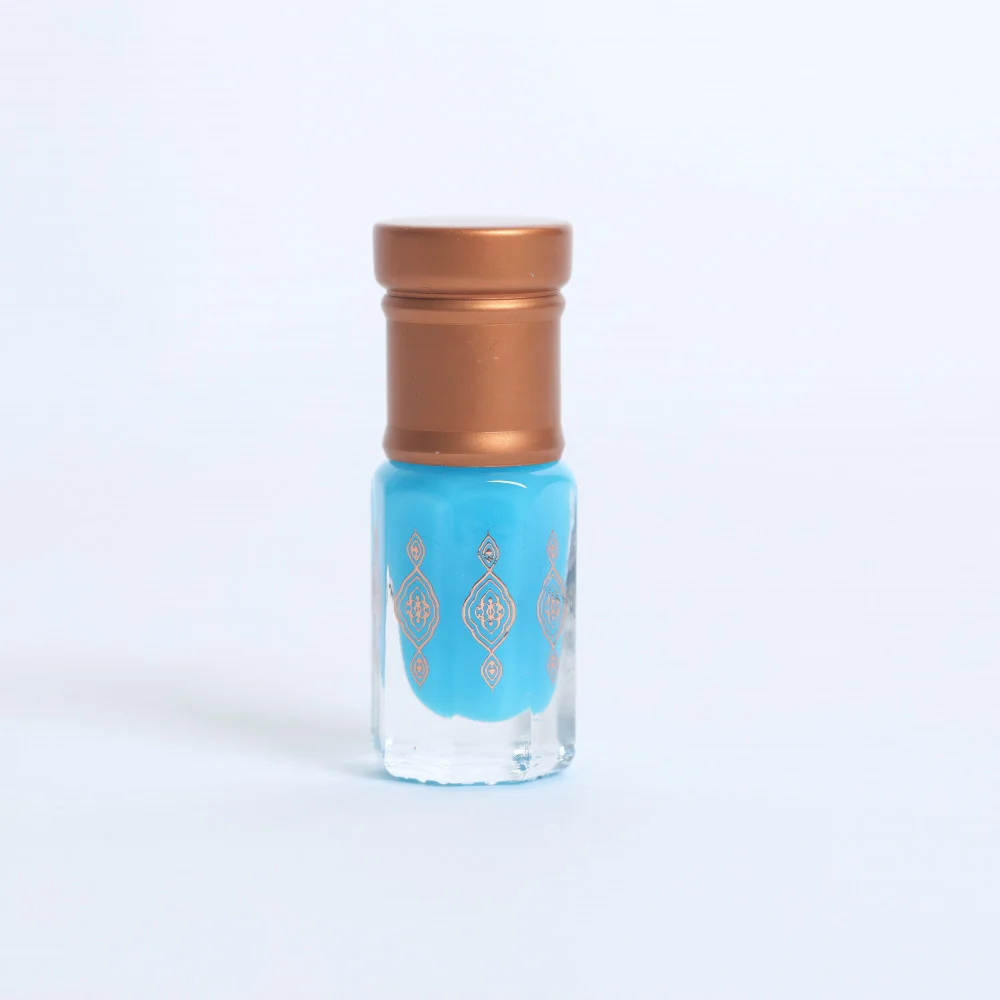
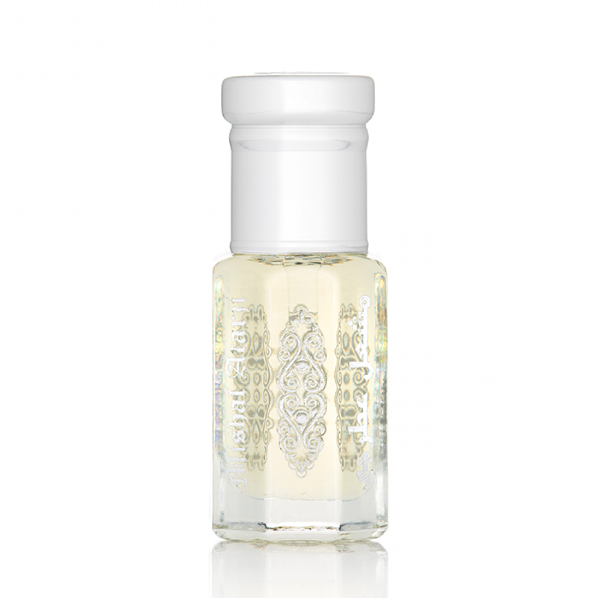
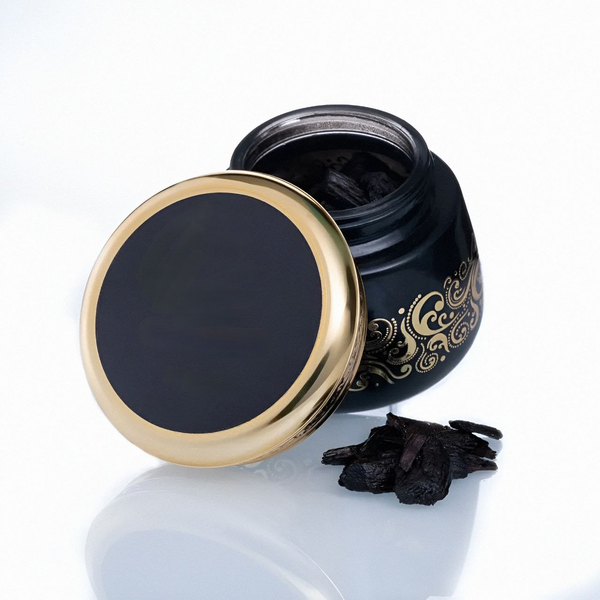
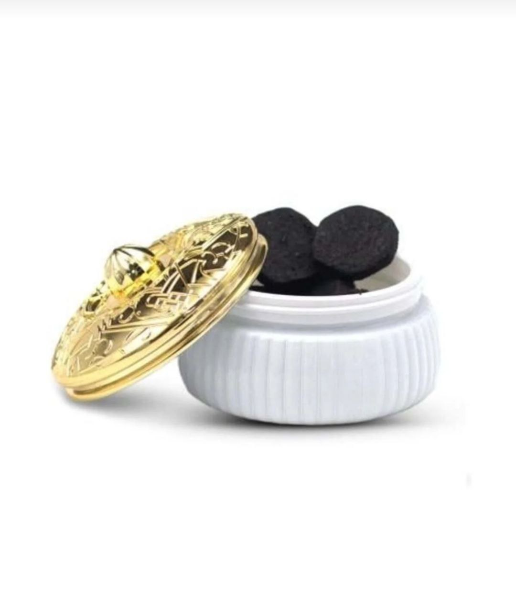
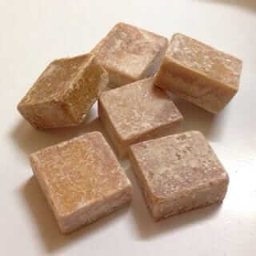

.عطور المسك تمنحك رائحة فاخرة وجذابة تدوم طويلاً. تتنوع بين الروائح الخفيفة والدافئة لتناسب جميع الأذواق

.دهن المسك هو زيت مركز يتميز بقوة رائحته. يُستخدم مباشرة على الجسم أو مع العطور الأخرى لتعزيز الثبات
 .بخور المسك هو نوع من البخور الفاخر يمزج بين رائحة المسك الغنية والعميقة مع روائح أخرى
 .مكعبات المسك مثالية للاستخدام في تعطير الجسم، الملابس، والخزائن، وتتميز برائحتها التي تمنح شعوراً بالنقاء والانتعاش
